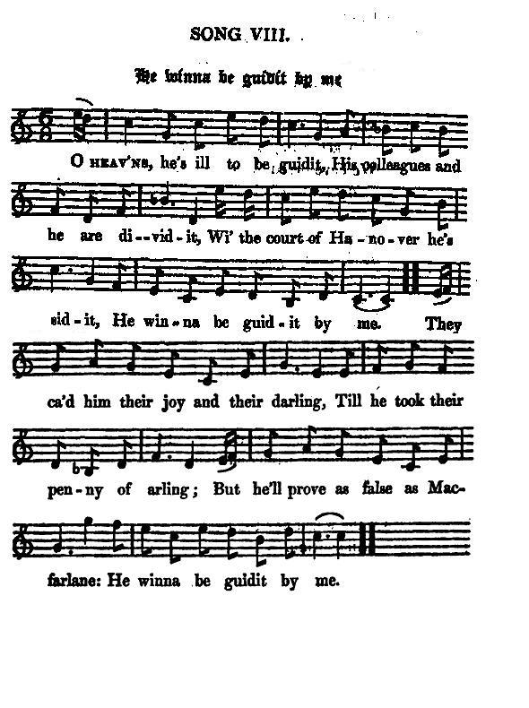

He winna be guidit by me
Le justifier? N'y comptez point!
The Laird of Phinaven
Tune - Mélodie"He winna be guidit by me"
from Hogg's "Jacobite Relics" 2nd Series N°8, page 25, 1821
Sequenced by Christian Souchon

|
To the tune:
This little quizzical song was made, it seems, on the defection of Mr Carnegy, celebrated in a former song as the best flyer from the field of Sheriffmuir, namely, " The laird of Phinaven , Who swore to be even Wi' any general or peer o' them a', man." Source: Hoggs "Jacobite Relics Vol 2" |
A propos de la mélodie:
Cette petite chanson en forme d'énigme a pour sujet, semble-t-il, la défection de M.Carnegie, célébré précédemment comme le meilleur fuyard sur la lande de Sheriffmuir, à savoir, "Le seigneur Phinaven Lequel jure qu'il sème Généraux et pairs dans leurs carrosses." Source: Hoggs "Jacobite Relics Vol 2" |

|
HE WINNA BE GUIDIT BY ME
1. O Heav'ns, he's ill to be guidit, His colleagues and he are dividit, Wi' the court of Hanover he's sidit, He winna be guidit by me. They ca'd him their joy and their darling, Till he took their penny of arling; But he'll prove as false as Macfarlane: He winna be guidit by me. 2. He was brought south by a merling, Got a hundred and fifty pounds sterling, Which will make him bestow the auld carlin: He winna be guidit by me. He's anger'd his goodson and Fintry, By selling his king and his country, And put a deep stain on the gentry: He'll never be guidit by me. 3. He's join'd the rebellious club, too, That endeavours our peace to disturb, too; He's cheated poor Mr John Grub, too, And he's guilty of simony. He broke his promise before, too, To Fintry, Auchterhouse, and Strathmore, too: God send him a heavy glengore [1], too, For that is the death he will die. [2] Source: "The Jacobite Relics of Scotland, being the Songs, Airs and Legends of the Adherents to the House of Stuart" collected by James Hogg, published in Edinburgh by William Blackwood in 1819. |
LE JUSTIFIER? N'Y COMPTEZ POINT!
1. Le justifier n'est pas facile Peu d'amis le trouvent habile, Même si Hanovre le soutient. Moi, le justifier? N'y pensez point! On l'appelait la crème des hommes. On lui confia de belles sommes, Il les gardera ce gredin: Moi, le justifier? N'y comptez point! 2. Au sud l'attira quel mirage? Cent cinquante livres de gages Que lui paiera la vieille catin: Moi, le justifier, n'y pensez point! Son filleul et Fintry le vomissent. Pourquoi fallait-il qu'il trahisse? Tous les nobles se sentent atteints. Moi, le justifier? N'y comptez point! 3. De plus c'est un de ces rebelles Qui se complaisent en querelles. Le malheureux John Grub le sait bien: Le parjure n'est pas pour les chiens. Il a déjà manqué de parole A Fintry, Auchterhouse, Strathmore Et la syphilis [1] viendrait à point A sa vie médiocre mettre fin. [2] (Trad. Christian Souchon(c)2010) |
|
[1]
glengore
: The "Concise Scots Dictionary" edited by Mairi Robinson, Aberdeen Universtity Press, 1985, has " grandgore &c grangour &c n venereal disease, syphilis. (late 15th - early 17th century. Only Scots. Old French: grand gorre)."
[2] The last verse appears to allude to some misunderstanding, that at last had led to a fatal incident, that fell out in his hand afterward ; whether intentional or not, one may best judge from the history of the event in the Criminal Trials. Wood relates it thus.—" Charles, earl of Strathmore, went, on the 9th of May 1728, to Forfar, to attend the funeral of a young lady, and after dinner went to a tavern there with James Carnegy of Phinaven, John Lyon of Brigton, and others. Lord Strathmore and Phinaven, then paying a visit to lady Auchterhouse, Phinaven's sister, Brigton followed them, and behaved rudely to the lady and her brother. Lord Strathmore thereupon left the house and came into the street, it being then betwixt eight and nine o'clock in the evening. Phinaven and Brigton following, some words passed betwixt them, when Brigton pushed Phinaven into a kennel two feet deep, from which a servant of lord Strathmore assisted him to get out. Phinaven immediately drew his sword, and pursued Brigton with a staggering pace. Brigton run towards lord Strathmore, whose back was to him, and endeavoured to draw his lordship's sword. Phinaven coming up, made a pass at Brigton; but lord Strathmore turning hastily about, and pushing off Brigton, threw himself in the way of Phinaven's sword, which run through his body; and his lordship died in consequence of that wound, on Saturday, 11th May 1728, at ten o'clock at night. Phinaven was brought to his trial for the murder of his lordship, before the court of justiciary at Edinburgh, 2d August 1728, and was acquitted through the superior ability and firmness of his counsel, Robert Dundas of Arniston, who told the jury that they were judges of law as well as of fact, thereby establishing that important constitutional point." |
[1]
glengore
: Le "Concise Scots Dictionary" publié par Mairi Robinson, Aberdeen, University Press, 1985, indique: "grandgore etc., grangour etc. n. maladie vénérienne, syphilis, (fin du 15 s. - début du 17ème. Mot Scots uniquement, du vieux français 'grand gorre').
[2] Le dernier couplet semble faire allusion à une dispute qui se termina par un incident fatal dont on tint Phinaven pour responsable par la suite. L'était-il vraiment? La chronique judiciaire permet le mieux d'en juger. Voici comment Wood relate les faits: "Charles, comte de Strathmore, se rendit le 9 mai 1728 à Forfar, pour assister aux obsèques d'une jeune dame et, après dîner, retrouva dans une taverne James Carnegie de Pinhaven, John Lyon de Brigton et d'autres. Strathmore et Phinaven qui étaient attendus chez Lady Auchterhouse, la soeur de de Phinaven, se levèrent, suivis de Brigton qui se mit à les invectiver, jusqu'à pousser Phinaven dans un fossé profond de deux pieds dont un domestique de Strathmore l'aida à sortir. Phinaven sortit alors son épée et se mit à poursuivre Brigton d'un pas chancelant. Brigton courut vers Strathmore qui avait le dos tourné et tenta de lui arracher son épée. Phinaven l'ayant rejoint essaya d'atteindre Brigton avec son arme. Mais Strathmore, en se retournant brusquement, intercepta la trajectoire de l'épée qui lui traversa le corps. Il mourut de sa blessure le samedi 11 mai, à 10 heures du soir. Phinaven fut jugé pour ce meurtre par la cour d'assises d'Edimbourg, le 2 août 1728 et il fut acquitté, grâce à l'intelligente et solide plaidoirie de son avocat, Me Robert Dundas d'Arniston, qui exposa aux jurés qu'ils devaient autant juger selon le droit, qu'apprécier les faits, ce qui constitua un acquis capital de la jurisprudence." |
|
|
|